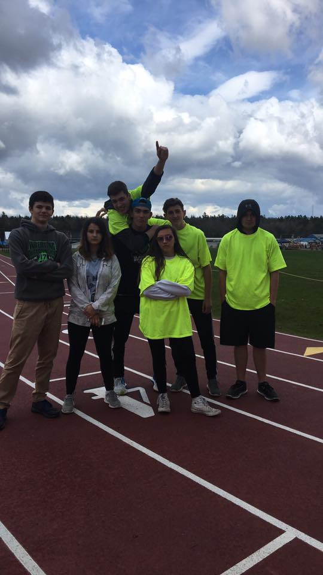
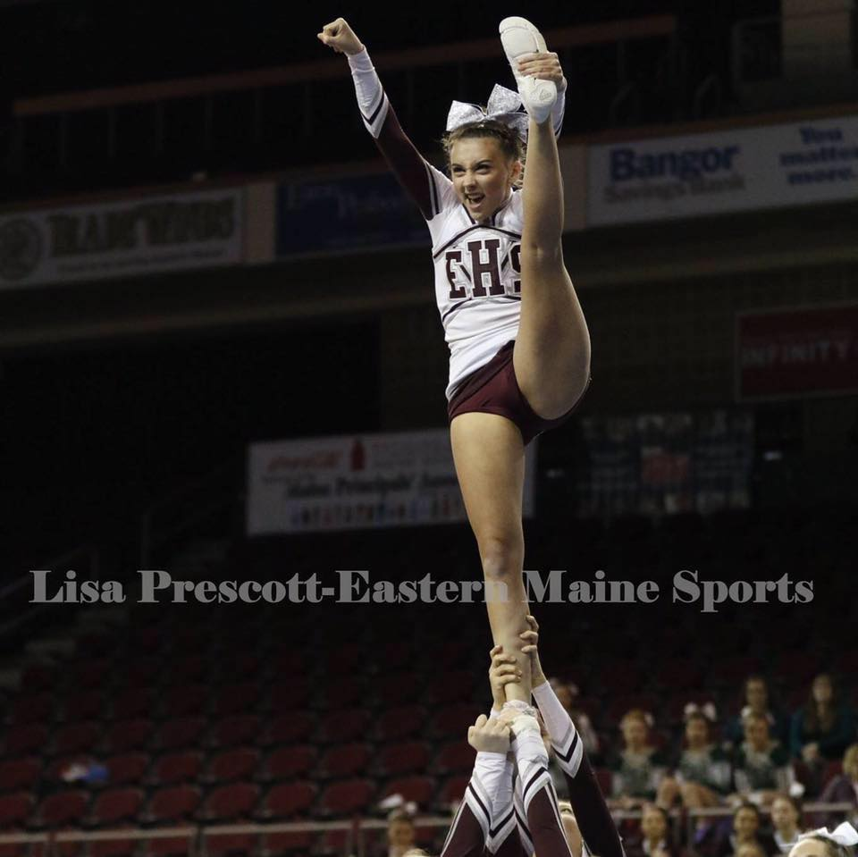
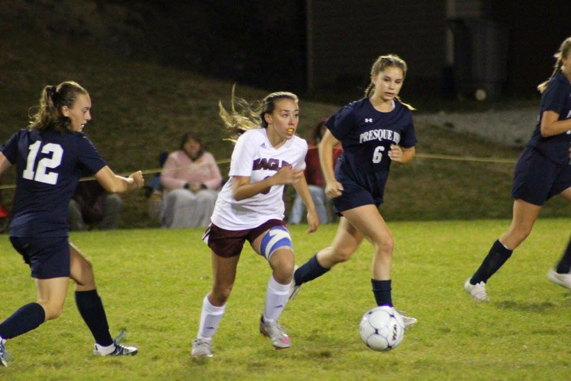
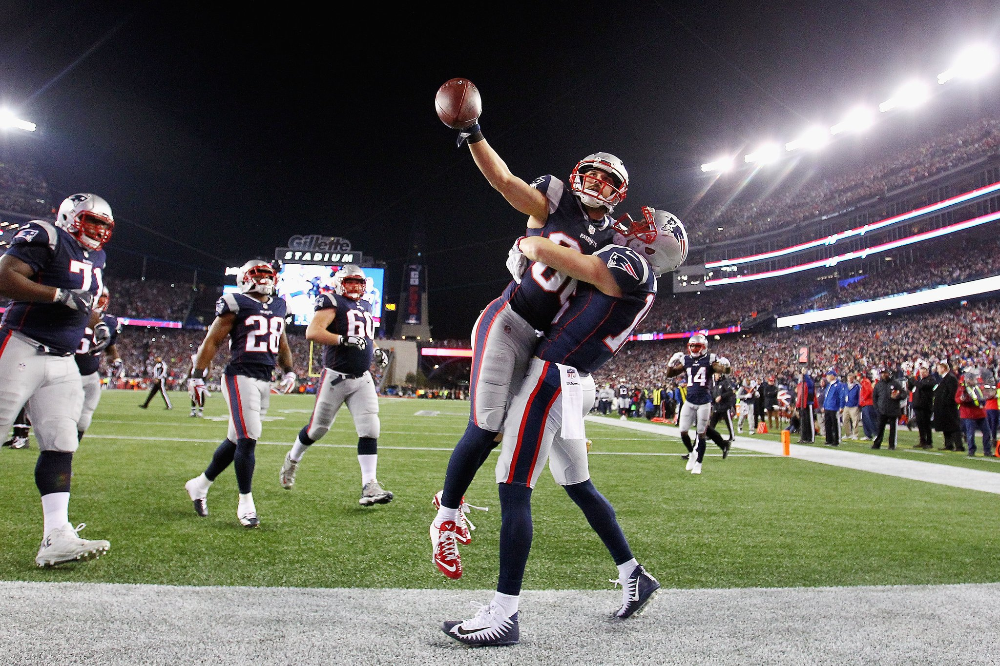

Links to: [Home] [Sports] [Photos] [College Life]
|  |  |
|  |  |
In highschool I loved sports. I was a three sport athlete. PLaying soccer in the fall, cheering in the winter and then running track in the spring! I had a true passion for cheering, but loved to run and play soccer as well. I think transitioning out of sportd into college was something I feared the most, but being able to stop into a few highschool games has been fun. GO NEW ENGLAND!